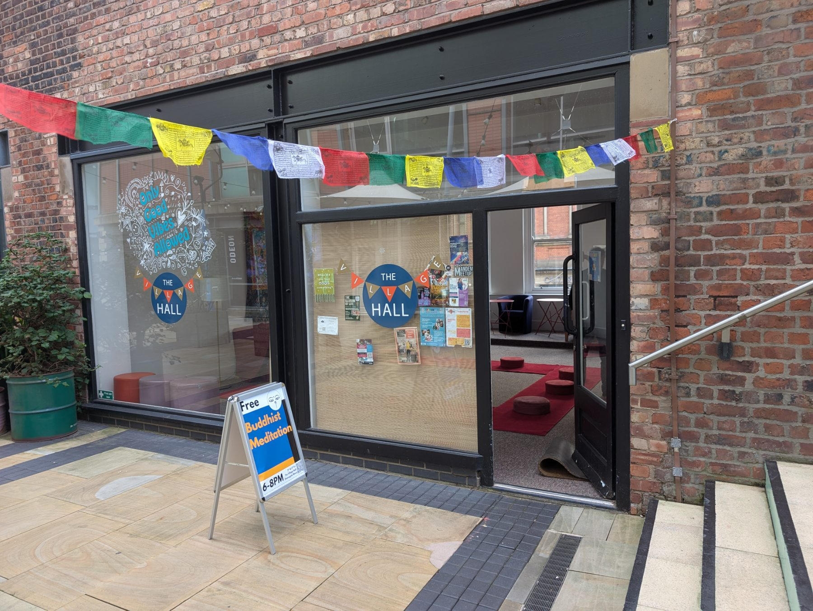

A Buddhist Meditation and Philosophy pop-up in the heart of Manchester

Vajra moon is open to everybody. No matter your faith, background or how little or how much you know, you are welcome. No booking required, just show up!
The session consists of a brief meditation session which will be explained beforehand, then a short talk on a Buddhist system of thought, followed by a shorter meditation session. Afterwards there is opportunity for discussion and free coffee, tea and snacks.
Questions are welcome. You don't have to agree with everything you hear; questioning and stress-testing what the Buddha taught is what he encouraged us to do, and is a vibrant element of the Buddhist tradition!
Vajra Moon is run by Kagyu Ling, an authentic Tibetan Buddhist centre in Chorlton with a rich history, that has been active since 1975 under the authority of Khaywang Lama Jampa Thaye and his Guru; Karma Thinley Rinpoche.
Don't hesitate to contact us if you have any questions!
Vajra Moon is part of the Dechen association of Buddhist centres in the United Kingdom, Europe and North America founded by Lama Jampa Thaye under the spiritual authority of Karma Thinley Rinpoche. It is administered by Kagyu Dechen Buddhism Ltd, a charitable company registered in the U.K.
Vajra Moon is part of Kagyu Dechen Buddhism, a charitable company limited by guarantee (company number 07789188; charity number 1145791) registered in England and Wales. Registered office: 45 Manor Drive, Chorlton, Manchester, M21 7QG